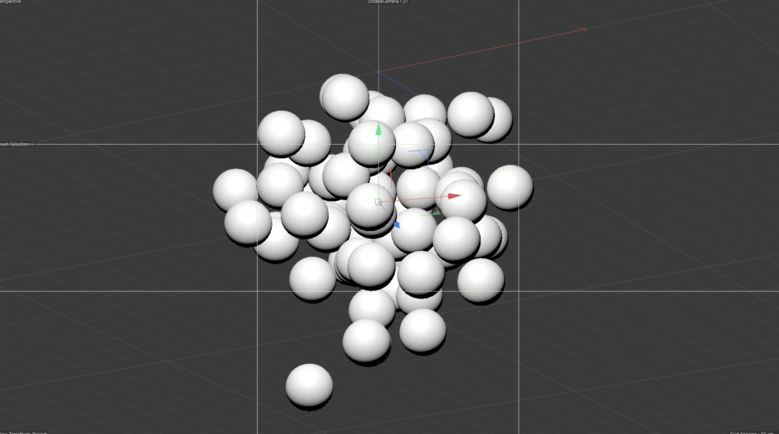
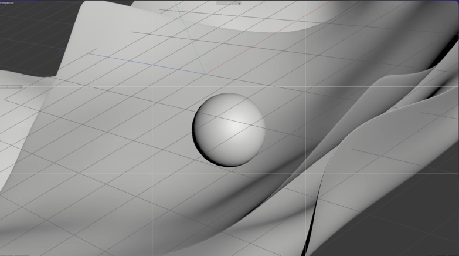
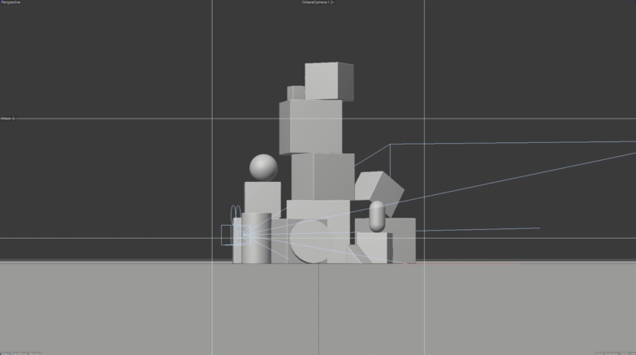
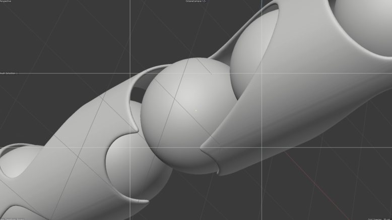

Alive
Breakdown
이 프로젝트는 사실 뭘 만들지 정하지 않고 만들었습니다. 무턱대고 개인작을 만들어 봐야겠다고 결심했고
이 작품의 의미와 제목은 작품 제작중에 결정하게 되었습니다.
큐브를 처음 만들고서 큐브가 조각되는걸 보며 점점 생기있게 느껴지게 되는 과정에서 Alive라는 제목을 지었던 것 같습니다.
사실 그것보다도 배경음악 이름이 Alive였던거같아요...ㅎ
많은 시행착오도 겪고 중간에 방향을 잃기도 했던 기억이 납니다.
다음은 세상에 안나와서 다행인 제가 시도했던 샷들입니다.
   보기만해도 안나와서 다행이라는 생각밖에 안드는것같습니다. ㅠㅠ
작품을 만들면서 RND라는 과정을 더 깊게 배워봤습니다.
주변 지인들에게 물어보면서 어떻게 하는게 좀더 괜찮아보이냐 계속 물어보고
현업 뛰시는 분들에게도 조언을 계속 구했습니다